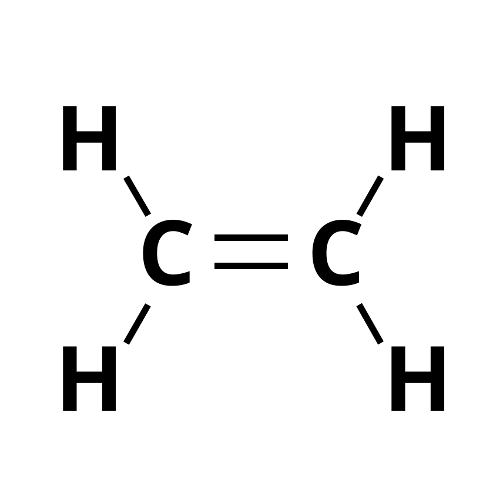

Informações
Eteno - C2H4
Também chamado de Etileno, é um gás incolor com odor adocicado e altamente inflamável. Suas aplicações são variadas, sendo utilizado para a fabricação de plástico e polietileno, usado como anéstisico em cirurgia e também para provocar o amadurecimento de frutas de maneira mais rápida, já que naturalmente é produzido durante esse processo.
- Fórmula Molecular: C2H4
- Estado de matéria: Gasoso
- Geometria Molecular: Plano Triangular
- Ponto de fusão: -169,2 °C
- Ponto de ebulição: -103,7 °C